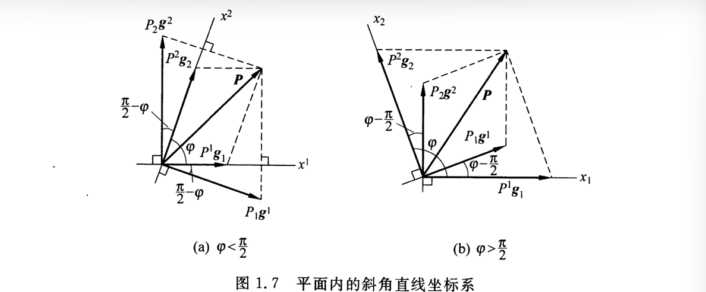
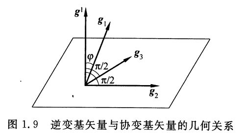
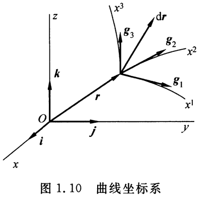

张量分析：Tensor Analysis
矢量与张量
基础运算
维数（dimension）：一个矢量空间所包含的最大线性无关矢量的数目。如，三维空间最多有3个线性无关的矢量
叉积（cross product）：两个矢量\(u\)和\(v\)的叉积\(u×v\)是一个矢量\(w\)，其方向垂直于\(u\)和\(v\)所决定的平面。其方向由右手定则确定。
叉积的模为\(|u×v|=|u||v| \sin{(u,v)}\)
混合积：\([u \ v \ w] = (u \times v) \cdot w = u \cdot (v \times w) = \begin{vmatrix} u_x & u_y & u_z \\ v_x & v_y & v_z \\ w_x & w_y & w_z \\ \end{vmatrix} = \begin{vmatrix} u_x & v_x & w_x \\ u_y & v_y & w_y \\ u_z & v_z & w_z \\ \end{vmatrix} \(，其物理意义为以\)u\)，\(v\)，\(w\)为棱的平行六面体的体积。（当\(u,v,w\)构成右手系时，六面体体积为正，即混合积\([u \ v \ w]\)为正）
混合积的乘法：$[u v w] [u' v' w'] = \begin{vmatrix} u \cdot u' & u \cdot v' & u \cdot w' \ v \cdot u' & v \cdot v' & v \cdot w' \ w \cdot u' & w \cdot v' & w \cdot w' \ \end{vmatrix} $
平面斜角直线坐标系
笛卡尔坐标系是标准的正交直线坐标系，而平面斜角直线坐标系的坐标轴不互相垂直，存在夹角\(\phi(\phi < \pi)\)。
如下图，平面内的直线坐标系\(x^1,x^2\)，其坐标线互不正交。选取沿坐标线\(x^1,x^2\)的参考矢量\(\mathbf{g}_{1},\mathbf{g}_{2}\)

平面中的任意矢量\(\mathbf{P}\)可以分解为：\(\mathbf{P} = P^1 \mathbf{g}_1+ P^2 \mathbf{g}_2 = \sum^2_{\alpha=1} P^\alpha \mathbf{g}_\alpha\)
哑指标:采用爱因斯坦求和约定，我们可以省略表达式的求和符号\(\sum\)。在同一项中，以一个上指标与一个下指标成对出现，表示遍历其取值范围求和。如\(\sum^2_{\alpha=1} P^\alpha \mathbf{g}_\alpha = P^\alpha \mathbf{g}_\alpha = P^\beta \mathbf{g}_\beta\)
再引入一对于\(\mathbf{g}_\alpha(\alpha=1,2)\)对偶的参考矢量\(\mathbf{g}^\alpha(\alpha=1,2)\)，其中\(\mathbf{g}^1\)，\(\mathbf{g}^2\)分别与\(\mathbf{g}_2\)，\(\mathbf{g}_1\)相互正交，如上图。
其中，我们称\(\mathbf{g}_\alpha(\alpha=1,2)\)为协变基矢量，\(\mathbf{g}^\beta(\beta=1,2)\)为逆变基矢量。两者的对偶条件:
\(\delta_\alpha^\beta\)为\(Kronecker \ \delta\)(克罗内克Delta函数)
矢量对协变基矢量的分量成为矢量\(\mathbf{P}\)的逆变分量\(P^\alpha = \mathbf{P} \cdot \mathbf{g}^\alpha（\alpha=1,2）\)。同理，矢量对逆变基矢量的分量成为矢量\(\mathbf{P}\)的协变分量\(P_\alpha = \mathbf{P} \cdot \mathbf{g}_\alpha（\alpha=1,2）\)
三维空间的斜角直线坐标系
三维空间中的斜角直线坐标系\(x^1,x^2,x^3\)，其坐标线互不正交。其空间中的任意一点可用以原点为起点的矢径\(\mathbf{r} = x^i \mathbf{g}_i（i=1,2,3）\)表示。
显然，三维空间的协变基矢量\(\mathbf{g}_i = \frac{\partial \mathbf{r}}{\partial x^i}\)，称为自然基矢量（大小为沿着坐标线的单位长度）。
当\(\mathbf{g}_1, \mathbf{g}_2, \mathbf{g}_3\)构成右手系时，混合积为正：
根据对偶条件：$\mathbf{g}^j \cdot \mathbf{g}i = \delta^j_i (i,j=1,2,3) = G 1 0 0 \ 0 1 0 \ 0 0 1 \ \end{bmatrix} $},G_{3 \times 3} = \begin{bmatrix

根据几何关系，逆变基矢量\(\mathbf{g}^i\)与对应的协变基矢量\(\mathbf{g}_i\)的夹角为\(\phi\)，则：
对逆变基矢量进行分解：\(\mathbf{g}^i = \sum_{j=1}^3 g^{ij} \mathbf{g}_j = g^{ij} \mathbf{g}_j \ (i = 1,2,3)\)
对协变基矢量进行分解：\(\mathbf{g}_i = g_{ij} \mathbf{g}^j \ (i = 1,2,3)\)
显然，\(\mathbf{g}_i \cdot \mathbf{g}_j = g_{ij} = g_{ji}，\ \mathbf{g}^i \cdot \mathbf{g}^j = g^{ij} = g^{ji}\)
由系数构成的\(3 \times 3\)的对称矩阵\([g_{ij}]，[g^{ij}]\)为互逆矩阵：
$$ [g_{ij}]= \begin{bmatrix} g_{11} & g_{12} & g_{13} \ g_{21} & g_{22} & g_{23} \ g_{31} & g_{32} & g_{33} \ \end{bmatrix} = \begin{bmatrix} \mathbf{g}_1 \cdot \mathbf{g}_1 & \mathbf{g}_1 \cdot \mathbf{g}_2 & \mathbf{g}_1 \cdot \mathbf{g}_3 \ \mathbf{g}_2 \cdot \mathbf{g}_1 & \mathbf{g}_2 \cdot \mathbf{g}_2 & \mathbf{g}_2 \cdot \mathbf{g}_3 \ \mathbf{g}_3 \cdot \mathbf{g}_1 & \mathbf{g}_3 \cdot \mathbf{g}_2 & \mathbf{g}_3 \cdot \mathbf{g}_3 \ \end{bmatrix}
$$
$$
[g^{ij}] = \begin{bmatrix} g^{11} & g^{12} & g^{13} \ g^{21} & g^{22} & g^{23} \ g^{31} & g^{32} & g^{33} \ \end{bmatrix} = \begin{bmatrix} \mathbf{g}^1 \cdot \mathbf{g}^1 & \mathbf{g}^1 \cdot \mathbf{g}^2 & \mathbf{g}^1 \cdot \mathbf{g}^3 \ \mathbf{g}^2 \cdot \mathbf{g}^1 & \mathbf{g}^2 \cdot \mathbf{g}^2 & \mathbf{g}^2 \cdot \mathbf{g}^3 \ \mathbf{g}^3 \cdot \mathbf{g}^1 & \mathbf{g}^3 \cdot \mathbf{g}^2 & \mathbf{g}^3 \cdot \mathbf{g}^3 \ \end{bmatrix} $$
因此\([g^{ij}] = [g_{ij}]^{-1}\)
称\([g_{ij}]\)为度量张量的协变分量，\([g^{ij}]\)为度量张量的逆变分量。
显然，\([g_{ij}] = \begin{bmatrix} \mathbf{g}_1 \\ \mathbf{g}_2 \\ \mathbf{g}_3 \\ \end{bmatrix} \cdot \begin{bmatrix} \mathbf{g}_1 \ \mathbf{g}_2 \ \mathbf{g}_3 \end{bmatrix}\)，则\(det([g_{ij}]) = [\mathbf{g}_1 \ \mathbf{g}_2 \ \mathbf{g}_3]^2 = g\)
\([\mathbf{g}^1 \ \mathbf{g}^2 \ \mathbf{g}^3] = [\mathbf{g}_1 \ \mathbf{g}_2 \ \mathbf{g}_3]^{-1} = \frac{1}{\sqrt{g}}\)，因此若协变量基矢量\(\mathbf{g}_1,\mathbf{g}_2,\mathbf{g}_3\)构成右手系，\(g > 0\)，则逆变基矢量\(\mathbf{g}^1,\mathbf{g}^2,\mathbf{g}^3\)也构成右手系。
指标升降关系：已知\(\mathbf{P} = P^i \mathbf{g}_i = P_j \mathbf{g}^j \(，\)\mathbf{P}\)为空间任一矢量，则有：
利用协变与逆变分量，可以将内积运算写成：\(\mathbf{X} \cdot \mathbf{Y} = (x^i \mathbf{g}_i) \cdot (y_j \mathbf{g}^j) = x^i y_i = x_i y^i = x^i y^i g_{ij} = g^{ij} x_i y_i\)
曲线坐标系

设三维空间中任意点P的位置用固定点O到该点的矢径\(\mathbf{r}\)表示：
借助笛卡尔坐标系\(x,y,z\)以及标准正交基\(\mathbf{i},\mathbf{j},\mathbf{k}\)来表示：
- 要求：曲线坐标\(x^i\)与空间点一一对应，即函数$ x(x1,x2,x3),y(x1,x2,x3),z(x1,x2,x3)\(在\)xi$的定义域内单值、连续光滑且可逆:
即该曲线坐标系的Jacobian行列式不为零。
假设坐标存在微小的增量\(d \mathbf{r} = \frac{\partial \mathbf{r}}{\partial x^i} dx^i = \mathbf{g_i} dx_i\)，其中\(\mathbf{g_i}= \frac{\partial \mathbf{r}}{\partial x^i} \ (i=1,2,3)\)为协变基矢量或自然局部基矢量，
\(\mathbf{g_i} \ (i=1,2,3)\)沿着P点的3根坐标线的切线并指向\(x^i\)增加的方向，形成了一组3个非共面的活动标架，称为空间某点关于曲线系\((x^1,x^2,x^3)\)的切标架。显然，基矢量\(\mathbf{g_i}\)不是常矢量，随着空间点位置的变化而变化，因此是一种局部基矢量。
根据对偶条件，引入一组与\(\mathbf{g_i}\)对应的逆变基矢量\(\mathbf{g^j} \ (j=1,2,3)\)，同样是空间每一点的局部标架。显然，逆变基矢量是坐标面的在某点的梯度：
因此线元\(d \mathbf{r}\)的分解：
指标升降关系：\(dx_i = g_{ij} dx^j\)。
正交曲线坐标系
若曲线坐标系\((x^1,x^2,x^3)\)的坐标线处处正交，则为正交曲线坐标系
正交系满足：\(g_{ij}=g^{ij}=0，i \neq j，i,j=1,2,3\)，显然度量张量矩阵\([g_{ij}],[g^{ij}]\)为对角矩阵，且\(\mathbf{g_i}\)与\(\mathbf{g^i}\)共线。
线元\(d \mathbf{r}\)的长度平方\(ds^2 = d \mathbf{r} \cdot d \mathbf{r} = g_{11} (dx^1)^2 + g_{22} (dx^2)^2 + g_{33} (dx^3)^2 \(。定义Lamé常数\)A_i (i=1,2,3) = \sqrt{g_{ii}}\)。
因此\(ds^2 = (A_1 dx^1)^2 + (A_2 dx^2)^2 + (A_3 dx^3)^2\)
为了求解正交系中的度量张量，先由几何方法得出矢径的微分与坐标的微分之间的关系，确定\(A_i\)，再因此得到度量张量的协变分量\(g_{ij}\)，进而也得到逆变分量\(g^{ij}\)。
坐标转换
假设有一组老坐标系\(x^i\)和新坐标系\(x^{j'}\)，之间存在\(x^i(x^{j'})\)或\(x^{j'}(x^i)\)的函数关系（满足Jacobian行列式不为零）。
将新坐标的基矢量对老坐标的基矢量分解：
其中，\(\beta^j_{i'}, \ \beta_j^{i'}\)分别为协变转换系数和逆变转换系数，形成\(3 \times 3\)矩阵。显然，\([\beta^j_{i'}]\)与\([\beta_j^{i'}]\)互逆。
因此老坐标的基矢量对新坐标的基矢量分解：
新老坐标的协变基与逆变基矢量之间的转换只需要9个独立的系数
上述提到\(\mathbf{g}_{i'} = \frac{\partial \mathbf{r}}{\partial x^{i'}} = \frac{\partial \mathbf{r}}{\partial x^{j}} \frac{\partial \mathbf{x^{j}}}{\partial x^{i'}} = \frac{\partial \mathbf{x^{j}}}{\partial x^{i'}} \mathbf{g}_{j}\) \quad (i'=1,2,3)。因此协变转换系数:
逆变转换系数：
因此,\(\ \mathbf{g}^{i'} = \frac{\partial \mathbf{x^{i'}}}{\partial x^{j}} \mathbf{g}^{j} \quad (i'=1,2,3)\)
对空间中的任意矢量\(\mathbf{v}\)，其在新老坐标系的分解：
由上式显然可得，\(v_{i'} = v_j \beta^j_{i'} \quad v^{i'} = v^j \beta_j^{i'}\)
度量张量分量在新老坐标系中的转换：
假设任意曲线坐标系\((x^1,x^2,x^3)\)与笛卡尔标准正交坐标系\((x^{1'}=x,y^{1'}=y,z^{1'}=z)\)存在转换关系\(x^i(x,y,z)\)，坐标转换系数\(\beta^{k'}_i=\partial x^{k'} / \partial x^i\)，则：
并矢
\(\mathbf{a} \otimes \mathbf{b}\)或\(\mathbf{a}\mathbf{b}\)称为并矢，也成为张量积
设矢量\(\mathbf{a}=(a_1,a_2,a_3)^T, \mathbf{b}=(b_1,b_2,b_3)^T\)构成\(3\times 1\)的矩阵，则其并矢
显然，\(\mathbf{a} \otimes \mathbf{b} \neq \mathbf{b} \otimes \mathbf{a}\)，并矢中的矢量顺序不能随意调换。
并矢的点积：指的是将相邻的两个矢量进行缩并
并矢的缩并：若取某两个矢量进行点积，称为缩并。（一次缩并使得并矢的阶数降低两阶）
如设四阶并矢\(\mathbf{abcd}\),进行缩并,降为二阶并矢：
双点积指的是两个张量元素之间的乘积，对于相同形状的矩阵\(A,B\)，双点积记为\(A:B = \sum_{i.j} A_{ij}B_{ij}\)
两个并矢的双点积：指的是将它们最邻近的4个矢量两两缩并
- 并联式：\(\mathbf{a} \mathbf{b} : \mathbf{c} \mathbf{d} = (\mathbf{a} \cdot \mathbf{c})( \mathbf{b} \cdot \mathbf{d})\)
- 串联式：\(\mathbf{a} \mathbf{b} \cdot \cdot \ \mathbf{c} \mathbf{d} = (\mathbf{b} \cdot \mathbf{c})( \mathbf{a} \cdot \mathbf{d})\)
对一个二阶并矢\(T=AB\)，引入两组线性无关的基矢量\(\mathbf{(a_1,a_2,a_3), (b_1,b_2,b_3)}\)，则:
易得\(T^{ij} = A^i B^j \quad (i,j=1,2,3)\)共9个分量，并且\(\mathbf{a}_i \mathbf{b}_j\)是9个线性无关的二阶并基。
因此，对于三阶并矢\(\mathbf{T = ABC} = T^{ijk} \mathbf{a}_i \mathbf{b}_j \mathbf{c}_k\)，存在\(3^3=27\)个并基和对应的分量。
张量的概念
张量